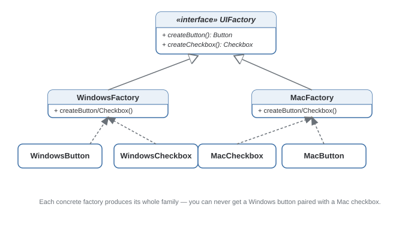

Abstract Factory Pattern
Produces families of related objects without specifying their concrete classes — guaranteeing everything created together stays compatible.
Theory
The problem, in plain terms
You're building a cross-platform UI toolkit. On Windows, buttons and checkboxes need to look like Windows controls; on macOS, like Mac controls. The one thing you cannot allow: a Windows-style button next to a Mac-style checkbox in the same window. The controls have to come from the same family.
Factory Method solves "which class do I instantiate" for one product. Abstract Factory solves it for a whole family of related products that need to stay consistent. You get one factory per family, and every product it hands out matches that family automatically — it's physically impossible to ask the WindowsFactory for a Mac checkbox.
How it's built
An AbstractFactory interface declares one creation method per product in the family — createButton(), createCheckbox(). Each ConcreteFactory implements all of those, each returning the family-appropriate product. Client code takes in one factory instance at startup and only ever calls methods on that factory — it never touches a concrete class name.
Choose the concrete factory once (at startup, based on OS/theme/config) and pass that single instance through the rest of the app — don't re-decide which factory to use scattered across the codebase.
Confusing this with Factory Method. If your "family" only has one product, or nothing bad happens when you mix products from different sources, you're not actually using Abstract Factory's core guarantee.
Where it bites you
Adding a new product to the family (say, a createSlider()) means updating the AbstractFactory interface and every concrete factory that implements it. That ripple effect is the price of the consistency guarantee. If the family only has one product, or cross-product consistency isn't actually a concern, this adds structure you don't need.
Diagram

When to Use
- Your app creates families of related objects, and mixing across families would cause real bugs or inconsistency.
- You want to swap an entire family of implementations by changing one thing — which factory instance you hold.
- You only have one product type — that's plain Factory Method.
- The family keeps changing shape — every new product means editing the interface and every concrete factory.
Real-World Examples
- Cross-platform GUI toolkits (Java Swing look-and-feel, Qt) — one factory produces an entire family of native-looking widgets consistent with the OS/theme.
- JDBC / database driver abstraction — switching vendors swaps a whole family of related objects (Connection, Statement, ResultSet) behind one interface.
- Theming engines — a dark-theme factory and a light-theme factory each produce a consistent family of styled components.
- Document format exporters — an OOXML factory vs. an OpenDocument factory, each producing document/paragraph/table objects that serialize correctly together.
Interview Questions
Click a question to reveal the answer.
What's the core difference between Abstract Factory and Factory Method?
Factory Method produces one product via one overridden creation method. Abstract Factory produces a whole family of related products via multiple creation methods bundled into one factory interface, guaranteeing the products handed out are mutually compatible.
How would you add a new product type (e.g., a Slider) to an existing setup?
Add createSlider() to the AbstractFactory interface, then implement it in every existing concrete factory. This is the known trade-off — the interface change ripples to every concrete factory, the cost of the consistency guarantee.
How would you add an entirely new family (e.g., a LinuxFactory) instead?
That's the case this pattern is optimized for: implement the existing AbstractFactory interface once in a new LinuxFactory class. No existing factories or client code need to change — only a new class is added.
Can Abstract Factory be implemented without classical inheritance?
Yes — a factory can be an object holding function references, or a simple struct of factory functions, rather than a class implementing an interface. The core idea — one bundle of related creation logic, swappable as a whole — doesn't require inheritance to work.
Code & Output
Same pattern, four languages. Every output shown here was captured from a real run.